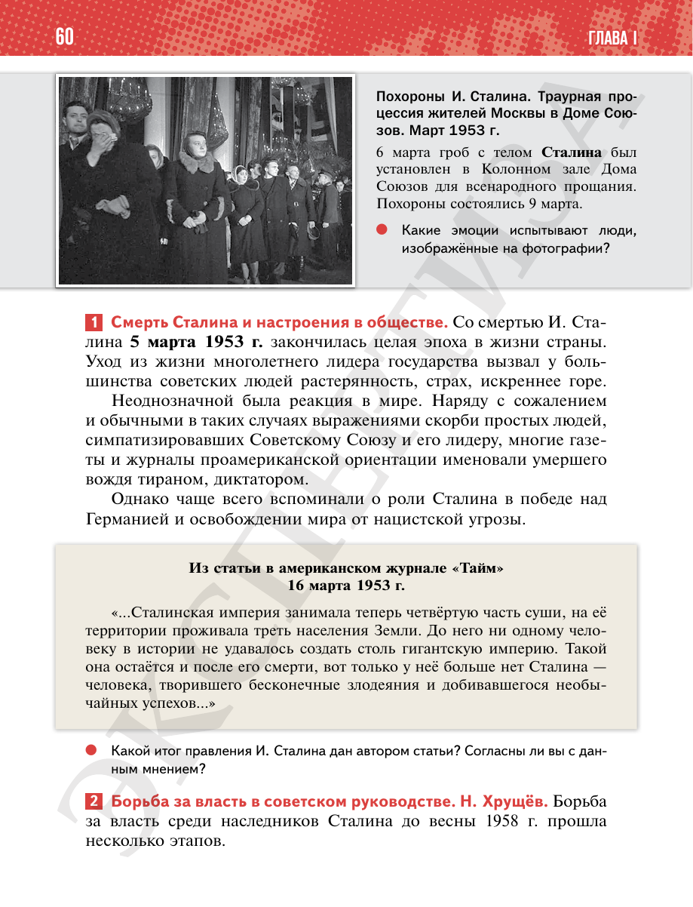

⌂
Мединский.нет
Последнее обновление: 21.08.2026
Мединский.нет
›
История России. 11 класс. Базовый уровень
›
Глава I. СССР в 1945—1991 гг.
›
§ 5. Новое руководство страны. Смена политического курса
›
стр. 60

← стр. 59
Оглавление
стр. 61 →
×